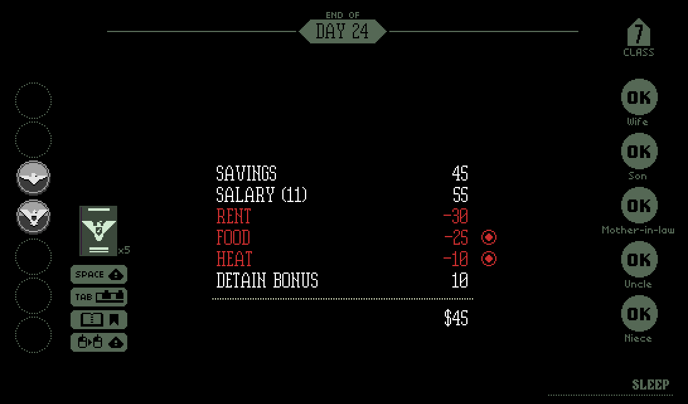

Game Introduction
Papers, Please is a puzzle-simulation video game created by indie developer Lucas Pope and released on August 8, 2013, for Windows and OS X. In the game, the player takes the role of an immigration officer at a border checkpoint in the fictional, totalitarian state of Arstotzka, tasked with inspecting passports, entry permits and other documents against an ever-expanding rulebook. Under time pressure and with limited information, Players must decide whether to admit, deny or detain travelers, all while juggling meager personal finances. I chose Papers, Please for its minimalist mechanics as well as unique aesthetics, and through this exercise I wish to explore how its rule-based constraints and narrative context compel players to act with the tension between bureaucratic duty, individual compassion, and survival under an oppressive regime.
Week 1
Papers, Please sets the player in an uncommon position—an immigration officer to establish a magic circle, giving the player more freedom in making moral choices. Then, its main game mechanics set up a tight gameplay loop where the player fully immerses themselves and enters the flow of gameplay. In this way, the player fully adopts the new identity of being an immigration officer, which brings them to reveal their political intrigue through the process of gaming. Papers, Please crafts its immersive world through a tightly defined magic circle, escalating flow-inducing challenges, a relentless daily loop, and procedurally embedded political intrigue.
In Papers, Please, the magic circle is established the moment you sit at your virtual immigration booth, takes on significance that it would never have outside the game. The game places the player in a scenario where they can "virtual play-acting" (Brown & Julin, 2015, p. 41) different roles that they may not ever experience in real life, creating a "divide between games and real life" (Brown & Julin, 2015, p. 41). As Huizinga (2003) describes, the magic circle "acts as the boundary around actions so as to allow us to read their significance as actions in a game rather than in real life," (Brown & Julin, 2015, p. 41) and Pope's automated enforcement of Arstotzkan policies exemplifies this shift in material context.
Each day in Papers, Please unfolds in a tight gameplay loop: reviewing new rules each morning, inspecting within limited time, paying for rent, gas, and food. Such a loop steadily builds up the challenge of and draws the player into a true flow state, where nothing else seems to matter. In the flow state, the player manages to find pleasure through these tedious clicks and inspections, fully immersing themselves in the role of a border inspector and feeling a sense of accomplishment with each successful approval or denial. The game's unique blend of strategy, resource management, and moral decision-making keeps players engaged and invested in the outcome of each interaction at the border. This cycle of escalating demands and immediate feedback submerges the player so fully in the task that the real world slips away, embodying Csikszentmihalyi's notion of flow through the game's perpetual, low-cost rounds.
Finally, political intrigue seeps in through procedurally embedded moral dilemmas. After a terrorist attack, you must process new security protocols; later, you're offered bribes or invited to join a revolutionary cell. These interventions are more than narrative set-pieces: they upend your routine, forcing you to weigh obedience against compassion, and to question the legitimacy and opacity of Arstotzkan authority. Lohmeyer (2017) calls this "value-sensitive design," (p. 13) where shifting regulations function as both mechanical changes and political gambits, transforming each stamped decision into an act of intrigue.
When I started playing Papers, Please, I was not used to the inspecting mechanics where I have to flip through dozens of files of each immigrant and compare them to the rule book. At first, I died within five days because I was too slow checking all these immigrants and starved all my family members to death. Then with the goal of keeping my family alive in mind, I soon started to speed myself up for more inspections and eventually got immersed in the game. There were times when I did not realize that I played for so long that my hands got sore really badly for holding the mouse in the same gesture for too long. Additionally, I found making bold moral decisions more easily within the magic circle created by Papers, Please. In the game world I "can do things that, if taken seriously rather than as parts of the game, would have serious unwanted consequences" (Brown & Julin, 2015, p. 42), for instance accept bribe and let EZIC, a resistance group in Papers, Please dedicated to overthrowing Arstotzkan authoritarian rule, into the border. This ability to make decisions without real-life consequences allowed me to explore different moral dilemmas and understand the complexities of human nature. It was a unique experience that challenged my beliefs and perspectives in a safe and controlled environment.
Week 2
One of the reasons why I chose Papers, Please for this play journal is because of its unique art style. I really like the minimalist, pixel art aesthetic with a low-saturated colour palette as well as sets of simple yet expressive character sprites. As I was playing the game. I found it has an interesting composition that sort of exemplifies the dehumanization of these immigrants in the border-passing process. The main interface is divided into three parts: the line of immigrants in an aerial view at the top, an interactable view of the checked immigrant at the left, and the paper document of the immigrant on the right. The right takes up the most space on the screen since the player will mainly be operating on this side. The framing of each part on the screen offers different meanings, but it all contributes to creating the same atmosphere in the gaming process. The composition of the bottom of the interface shows the documents of each immigrant, including their passport, an identity information card, an entry permit if the immigrant is a foreigner, and a work permit if the immigrant is a foreign worker. The game allows limited conversations with the immigrant, so the documents are the only way that the player can know about these characters.

The main interface of Papers, Please
Moreover, the player has the right to scan the body of the immigrants to ensure their gender matches the documents or they are not bringing any weapons. This serves as a demonstration of how social institutions "documented and classified" humans into categories "as a means of managing the movements and behavior of large numbers of people" (Sturken & Cartwright, 2018, p. 351), which features the concept of biopower: the methods and practices through which a society exerts control over individuals and populations by regulating and managing their biological characteristics and life processes. In short, this way of framing in Papers, Please shows the impact of biopower on individuals within a bureaucratic system, highlighting the dehumanizing effects of strict categorization and surveillance. It also raises questions about the ethical implications of prioritizing security over individual rights and freedoms.

Body scan in Papers, Please
I think Papers, Please successfully conveys the theme of dehumanization with its composition and game process. When I was playing, my main focus was on the rules each day and how to identify misinformation on these documents as fast as I could. In my gameplay process, I was not really treating these characters as individuals but categorizing them with statistics like their countries, genders, weights, and jobs. In addition, with a limited time each day, my game flow becomes more mechanized. For each immigrant, I will check the information card first, then their passport code, and finally the dates and the genders. This systematic approach to processing the immigrants in the game reflects the dehumanization theme, as it reduces them to mere data points to be sorted and analyzed. The time constraints further add to the sense of detachment and efficiency over empathy in the gameplay experience.
Papers, Please also contains some elements of a "procedural cinema" proposed by Russworm (2018) for its narrative with a "'broken' feature of the game, along with its rules that restrict player interactivity" (p. 209). While the player gets to experience an immersive game world and story, there is some interactivity remaining for decision-making and moral dilemmas, which adds depth to the overall experience. This combination of limited interactivity and narrative structure creates a unique gameplay experience that challenges players to confront difficult ethical questions within the context of the game's world. The game's uncompromising rule set—tight time limits, layered documentation requirements, and a strict stamping interface—limits player actions to a handful of essential decisions: approve, deny, or detain. Yet within these narrow parameters, each choice resonates with emotional and political significance, creating emergent stories of desperation, corruption, and resistance. By weaving moral quandaries into its core mechanics, the game transforms routine checkpoint duties into compelling vignettes of human struggle.
Week 3
Papers, Please exemplifies the interpretive challenges of video games as described by Bogost (2009), who argues they "resist creating neat little piles of coherent analysis" (p. 3). The game's document-checking mechanics force players to actively construct meaning through morally ambiguous choices—whether to prioritize familial survival or state loyalty. These divergent playthroughs reflect what Ensslin (2023) terms "highly individualized, multi-linear" player experiences (p. 61), where systemic "messiness" emerges through dynamically shifting policies that deny moral absolutes. Even benevolent actions like aiding dissidents may trigger punishing consequences, embedding meaning in procedural discomfort.
The game's oppressive atmosphere is displayed through multimodal design. Its bleak pixel art, repetitive stamping sounds, and claustrophobic interface form a multimodal ensemble, where visual, auditory, and textual elements converge to simulate bureaucratic control. This design mirrors the argument that games require analysis of how component parts interact within a multimodal ensemble.
Psychoanalytically, Papers, Please functions as a collective dream to its player. The endless paperwork cycle transforms mundane tasks into life-or-death rituals, echoing Freud's (1900) theory of dreams as spaces where repressed anxieties surface. The salary system—which ties survival to procedural compliance—literalizes capitalist alienation, demonstrating how games, as interactive systems, can immerse players in the consequences of societal structures. Ultimately, Papers, Please challenges players to confront the ethical dilemmas inherent in bureaucratic control and the dehumanizing effects of blind adherence to rules and regulations.

Salary in Papers, Please
Papers, Please occupies a dual space: its procedural "messiness" (Bogost, 2009) intersects with its nightmarish repression to demand player complicity. Unlike passive media, it forces users to enact ideological violence, blurring Taylor's (2009) assemblage of play, where design, psychology, and culture collide, with the psychoanalytic desire of the other. This duality underscores why interdisciplinary analysis, combining multimodal semiotics and psychoanalytic theory, is essential for unpacking how games weaponize participation to critique power structures.
Week 4
Papers, Please employs its minimalist, bureaucratic aesthetic as a form of criticism using embodied game mechanics to expose and criticize the state power ideologies. The game's value-sensitive design foregrounds moral and political questions by embedding them directly into play. From the first day at the immigration booth, players develop a gamer habitus: repetitive stamping and document-checking routines mirror the internalization of bureaucratic labor. The player gains pleasure in the cycle of "exploration, automation, adaption" (Kirkpatrick, 2013, p. 183), transforming the game into a "semiotic domain," (Kirkpatrick, 2013, p. 184) where the game interface creates meaning to motivate the player. As I progress in the game, every time I found the repetitive stamping routine tedious—in other words I formed dissonance toward the game—a new document type or a new rule rise, making me abandon the ingrained habits and rethink every motion. Building on the cycle of exploration, automation, adaptation, Papers, Please grants players a potent but conflicted agency: you are empowered to interpret and apply the rulebook, yet every choice you make is tightly constrained by the Ministry's confusing and unclear rules. This tension between freedom and constraint is central to the game's aesthetic choices. On one hand, the minimalist interface strips away distractions, focusing your attention on the embodied act of stamping and checking. On the other hand, the iterative introduction of new documents or frisk protocols reconfigures your sensorimotor habits, forcing you to renegotiate what winning means in each context.
In addition to the more complex mechanics, the player is exposed to moral dilemmas throughout the game, which makes the gameplay experience "entertaining and emotionally impactful" (Lohmeyer, 2017, p. 12) at the same time. There are times when I really struggled if I should let some immigrants go. For instance, there is a woman who forgets a piece of document but urges to see her son across the border. Papers, Please implements a "value-sensitive design" (Lohmeyer, 2017, p. 13) to make the player to "consider social and political values" (Lohmeyer, 2017, p. 13) while navigating the gameplay. This adds a layer of depth and thought-provoking elements to the overall experience, creating a unique and engaging game that challenges players in more ways than one. By embedding value-sensitive design that makes play entertaining and emotionally impactful, the game ensures that every approval or denial carries both personal and political stakes. Ultimately, this fusion of aesthetic choices and player agency transforms Papers, Please from a mere procedural simulator into a form of critical making, compelling players not only to navigate rules but to reflect on the human consequences those rules produce.

Moral dilemmas in Papers, Please
Week 5
Cultural politics is also a huge component of Papers, Please. It stages a tightly controlled procedural simulation of stage power that invites reflection on the concept of bureaucracy, ideology, and national identity. Papers, Please subverts the tropes of patriotic spectacle and heroic nationalism that Toscano (2020) identifies in mainstream American blockbusters—especially first-person shooters—by immersing players in the drudgery of bureaucratic enforcement rather than triumphant combat. In place of valorizing U.S. intervention as a moral imperative, Lucas Pope casts the player as an Arstotzkan "Inspector," whose daily work of stamping visas and scanning bodies exposes how state power inscribes belonging and exclusion into paper, metal and code. The daily "rule updates" and propaganda-style newspaper headlines that flash across the booth screen function as a critique of how regimes ritualize loyalty and obedience, reminding players that national identity can be manufactured through rote procedures rather than noble sacrifice.
Beneath this surface, the game's reward structure mirrors neoliberal ideologies of competition and accumulation that Toscano (2020) locates in the underlying mechanics of mainstream titles. Each processed traveler becomes a unit of economic value, and time pressure transforms a moral encounter into a transaction: work faster, earn more, or watch your family starve. By embedding these market logics into its core systems, Papers, Please naturalizes the idea that ethical choices occur within—and are constrained by—a capitalist framework, compelling players to weigh compassion against survival. From my gameplay experience, I found the biggest moral dilemma I faced in this game is all about whether you should prioritize your own job or sacrifice yourself for others.
I think Papers, Please has done a successful job "providing opportunities for encouraging ethical reasoning and reflection" (Formosa et al., 2016, p. 212) to create an emotionally strong gameplay experience. These intertwined nationalistic and economic structures generate profound moral friction. A paper by Formosa et al. (2016) argues that Papers, Please stages a relentless moral crucible in which four interlocking themes come to the fore. First, dehumanization emerges as players—driven by time pressure and financial penalties—learn to treat individuals as mere documents, evoking Hannah Arendt's "banality of evil" as compassion gives way to efficiency. Second, the theme of privacy is confronted with head-on when invasive tools like gender-discrepancy checks and X-ray scanners force choices between personal dignity and state security, illustrating how bureaucracies can weaponize intimate data. Third, fairness arises in the tension between strict rule enforcement and ad hoc compassion: players must weigh the risks of bending opaque regulations to help desperate travelers against the potential consequences for their own survival. Finally, loyalty is tested as the inspector is pulled between the corrupt Arstotzkan regime and the shadowy rebel group EZIC, each incremental demand eroding clear allegiances and forcing a choice between obedience and resistance. Together, these themes compel players to confront the ethical costs of compliance, empathy, and dissent within a system that offers no easy answers.
Reflection
Through this exploration of Papers, Please, I realize how tightly interwoven mechanics, aesthetics, and narrative can transform a seemingly simple game into a powerful site of ethical inquiry. By living inside the magic circle as an Arstotzkan inspector, I experienced how procedural design can scaffold moral engagement—how time pressure, escalating rules, and resource management don't just challenge my dexterity, but continually force me to negotiate competing values of efficiency, compassion, and survival. This practical engagement reinforced the importance of value-sensitive design: every new document type or security protocol shifted not only my sensorimotor habits but also the political stakes of each decision.
On a theoretical level, playing Papers, Please deepened my understanding of concepts like procedural rhetoric and multimodal ensemble. I saw how the game's pixel-art world, staccato stamping sounds, and claustrophobic UI work in concert to simulate bureaucratic control, enacting what Bogost calls procedural "messiness" and what Kress and van Leeuwen term a multimodal network of meaning. Moreover, the title's minimalist interface crystallized Kirkpatrick's ideas about "semiotic domains," showing me how aesthetic restraint can heighten player focus on core systems and their ideological implications.
Overall, this exercise underscored that impactful game design demands more than compelling mechanics or polished visuals alone—it requires a thoughtful orchestration of rule systems, sensory cues, and narrative context to invite reflection on real-world power structures. Engaging directly with these elements has not only honed my analytical toolkit in game studies, but also inspired me to consider how future designs might similarly leverage procedural systems to foster empathy, critical reflection, and even subtle forms of resistance.